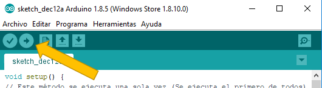

Tutorial 5: Semáforo Básico
Objetivo:
Este proyecto tiene como objetivo verificar el correcto funcionamiento de un circuito sencillo que simula un semáforo. Posteriormente en los dos siguientes proyectos será usado este circuito.
Pasos a Seguir
- Desconecte el cable usb de la placa o del ordenador (con el objetivo de evitar cortocircuitos)
- Coloque la parte lateral donde aparecen más pines con el prefijo "D" conectada a la placa en la primera columna. Los demás pines quedarán en el aire como en la imagen.
- Coloque las resistencias, leds y cables según el esquema de circuito que se muestra a continuación:
- Conecte la placa al ordenador por el cable usb
- Abra el entorno y copiar el siguiente código:
- Pulse el segundo botón del entorno para compilar y subir el código.
- Tras transferir el código podrá ver que los leds se comportan como si fueran las luces de un semáforo. Si pulsas sobre el botón de la consola de monitorización (botón superior derecha en el que aparece una lupa) podrás ver que por consola indica qué led se va a encender.


Código Semáforo
void setup() {
// Pon aquí tu código que será ejecutado solo una vez:
// Inicia la comunicación entre la placa y el ordenador
Serial.begin(9600);
// Indica que el pin D1 será de salida (Led rojo)
pinMode(D1,OUTPUT);
// Indica que el pin D5 será de salida (Led ambar)
pinMode(D5,OUTPUT);
// Indica que el pin D8 será de salida (Led verde)
pinMode(D8,OUTPUT);
}
void loop() {
// Pon aquí tu código principal, para que repita constantemente:
// Envia un mensaje al ordenador indicando qué va a hacer
Serial.println("Se enciende la luz verde");
// Indica que se envie la señal de voltaje alta de 3.3 voltios en el pin D8
digitalWrite(D8,HIGH);
// Indica que se espere 3000 milisegundos = 3 segundos
delay(3000);
// Indica que se envie la señal de voltaje baja de 0 voltios en el pin D8
digitalWrite(D8,LOW);
// Envia un mensaje al ordenador indicando qué va a hacer
Serial.println("Se enciende la luz ambar");
// Indica que se envie la señal de voltaje alta de 3.3 voltios en el pin D5
digitalWrite(D5,HIGH);
// Indica que se espere 1000 milisegundos = 1 segundo
delay(1000);
// Indica que se envie la señal de voltaje baja de 0 voltios en el pin D8
digitalWrite(D5,LOW);
// Envia un mensaje al ordenador indicando qué va a hacer
Serial.println("Se enciende la luz rojo");
// Indica que se envie la señal de voltaje alta de 3.3 voltios en el pin D1
digitalWrite(D1,HIGH);
// Indica que se espere 3000 milisegundos = 3 segundos
delay(3000);
// Indica que se envie la señal de voltaje baja de 0 voltios en el pin D8
digitalWrite(D1,LOW);
}


Explicación del Código de este Ejemplo
La función Setup se encarga de indicar la velocidad a la que se comunciará la placa con el ordenador e configurar los pines D1, D5 y D8 como pines de salida de señal o voltaje.
La función Loop está dividida en tres fases:
- Fase 1 Luz Verde: Indica que se va a encender el led verde, se enciende el led verde, se espera 3 segundos y se apaga el led.
- Fase 2 Luz Ambar: Indica que se va a encender el led ambar, se enciende el led ambar, se espera 1 segundo y se apaga el led.
- Fase 3 Luz Roja: Indica que se va a encender el led rojo, se enciende el led rojo, se espera 3 segundos y se apaga el led.